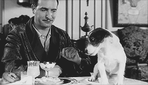
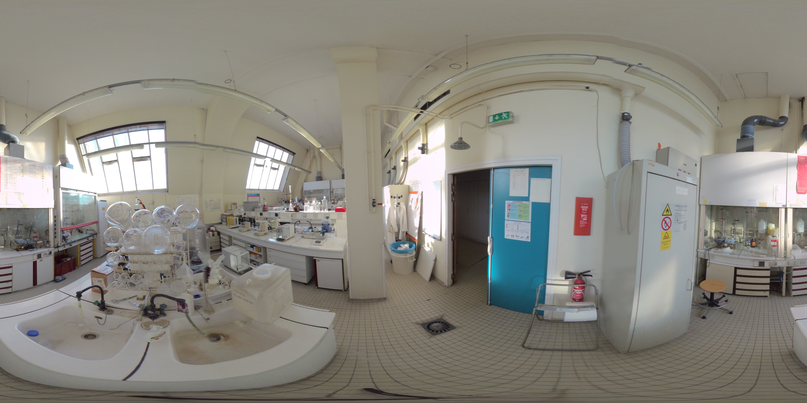
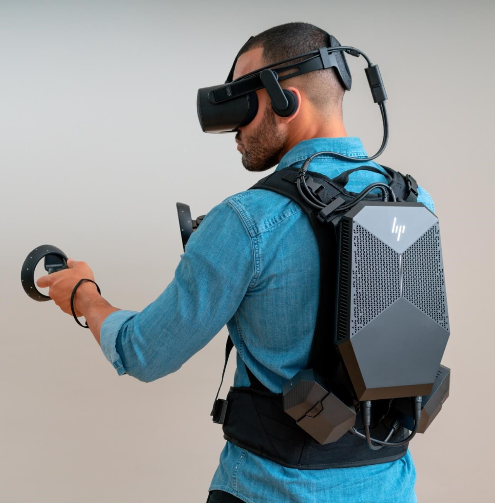
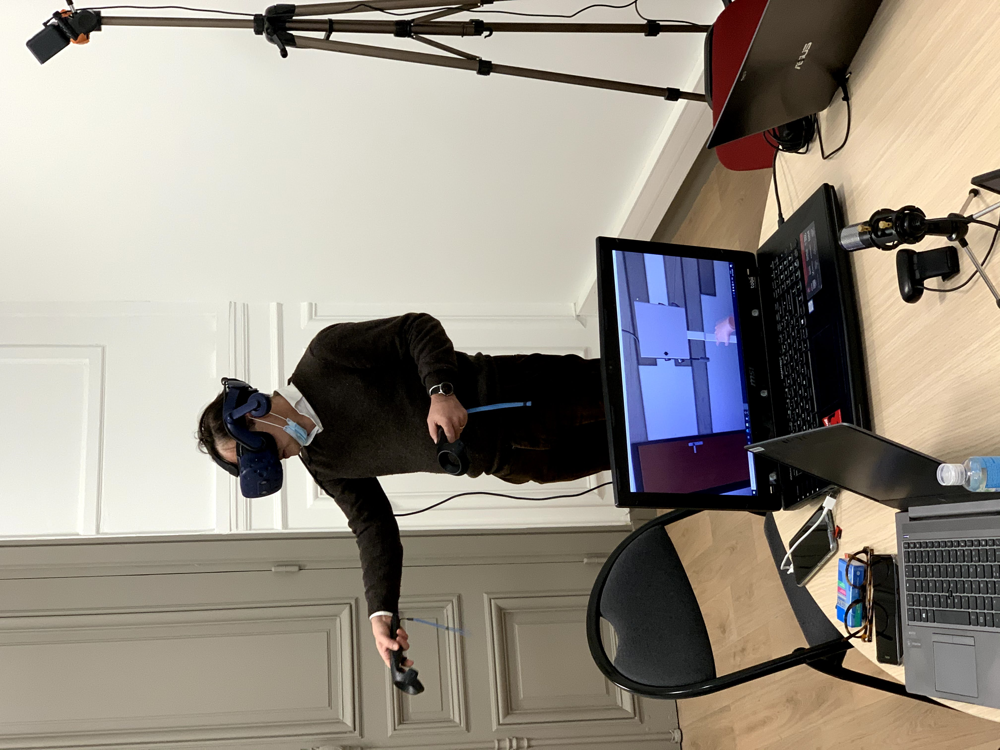

Le projet
CAP'VR
Chimie Agro Pharma
Virtual Reality
Plan
|  |
|
Présentation Générale
Le projet se décompose en 2 Work Packages :
- CAP'VR : images/videos 360°
- Gest'VR : Réalité Virtuelle
Présentation du WP N°1 CAP'VR images/videos 360°
|  |
Scénarisation et création de supports pédagogiques virtuels avec visualisation à 360° (Images et vidéos à 360°), des visites virtuelles, interactives et immersives des laboratoires du Cnam et les sites de productions industriels concernés par l’enseignement pour les métiers des Industries Chimiques, Pharmaceutiques et Agroalimentaires. |
Usages du Work Package N°1 CAP'VR
Ces visites virtuelles seront « organisées » par thématiques et permettront aux élèves en formation de découvrir et d’appréhender les liens et interactions possibles entre les différents domaines scientifiques. Elles constitueront aussi un moyen aisé pour initier les élèves aux techniques très diverses actuellement accessibles dans les différents laboratoires qui seront ici regroupées de façon virtuelle. Enfin, ces visites pourront également être proposées lors du forum d’orientation du Cnam pour permettre aux visiteurs de découvrir de façon attractive et ludique les métiers de la chimie et susciter des vocations.
Présentation du WP N°2 Gest'VR
L’entraînement aux gestes professionnels selon différents scénarios
|  |
Le développement de simulations interactives en Réalité Virtuelle pour entraîner les élèves en toute sécurité, aux gestes techniques nécessaires pour la réalisation d’expériences en Chimie et l’utilisation d’appareils de laboratoire dans le cadre des travaux pratiques et/ou en production. |
Les partenaires internes du projet CAP'VR
- EPN7 Chimie vivant santé (Analyse chimique et bioanalyse, Biochimie et Agroalimentaire, Chimie générale, Chimie Moléculaire et Formulation.),
- EPN4 Ingénierie mécanique et matériaux (Matériaux),
- EPN1 Bâtiment, Énergie (Génie des procédés)
- Direction nationale des usages du numérique (DN1)
Les partenaires externes du projet CAP'VR
- Mimbus (cadrage, developpement VR WP2)
- Immersive Learning Lab (Formations, scenarisation WP1, Conseils AMOA)
Point d'avancement : CAP'VR images/videos 360°
- Commande des Matériels
- Cadrage
- Rescencement des laboratoires
- formations en cours
Description des lots de Gest'VR
- Module N°0 de démonstration basé sur la modélisation des équipements et environnements liés aux 3 modules.
- Module N°1 : La sécurité au Laboratoire (à différents niveaux)
- Module N°2 : Les manipulations simples (faire un dosage, utilisation de balances, extraction, utilisation d’une pipete, préparation de solutions, utilisation d’un évaporateur rotatif…).
- Module N°3 : La chromatographie (Niveau 1 : éléments de base, CCM, CC) (Niveau 2 : CG, HPLC, techniques couplées à la MS)
Point d'avancement infographie 3D Gest'VR
Visite de Mimbus au Cnam
|  |
Prise de vues Labo, Validation de visuels, Présentations, Démos, Ateliers créatifs pour scénariser des modules pédagogiques. |